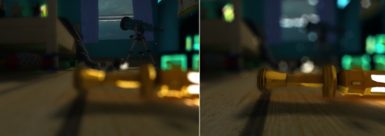

Depth of Field 3.4
Depth of Field 3.4 is a common postprocessing effect that simulates the properties of a camera lens. The name refers to the fact that the effect was added in Unity 3.4, but now is superseded by a more modern Depth Of Field Scatter effect which uses optimized techniques to simulate lens blurs and enables better transitions between focal areas. However, depending on the use case, performance might be a lot better in the old 3.4 version as it was developed for older hardware.
In real life, a camera can only focus sharply on an object at a specific distance; objects nearer or farther from the camera will be somewhat out of focus. The blurring not only gives a visual cue about an object's distance but also introduces bokeh which is the term for pleasing visual artifacts that appear around bright areas of the image as they fall out of focus.
An example of the new Depth of Field effect can be seen in the following images, displaying the results of a defocused foreground and a defocused background. Notice how the foreground blur overlaps with the rest while the background doesn't.

Only the nearby pipes are in the focal area

Foreground vs Background blurring with Depth of Field
Foreground vs Background blurring with Depth of Field
You might also consider using the Tilt Shift effect for a more straightforward but less sophisticated depth-of-field effect.
As with the other image effects, this effect is only available in Unity Pro and you must have the Pro Standard Assets installed before it becomes available.
Properties
| General Settings | |
| Resolution | Determines the internal render target sizes. A lower resolution will result in faster rendering and lower memory requirements. |
| Quality | The quality level. Choose between the faster OnlyBackground or the higher-quality BackgroundAndForeground which calculates the depth-of-field defocus for both areas separately. |
| Simple tweak | Switches to a simpler focal model. |
| Visualize focus | This shows the focal plane in the game view to assist learning and debugging. |
| Enable bokeh | This will generate more realistic lens blurs where very bright parts are scaled and overlap. |
| Focal Settings | |
| Focal distance | The distance to the focal plane from the camera position in world space. |
| Object Focus | Determine the focal distance using a target object in the scene. |
| Smoothness | The smoothness when transitioning from out-of-focus to in-focus areas. |
| Focal size | The size of the in-focus area. |
| Blur | |
| Blurriness | How many iterations are used when blurring the various buffers (each iteration requires processing time). |
| Blur spread | The blur radius. This is resolution-independent, so you may need to readjust the value for each required resolution. |
| Bokeh Settings | |
| Destination | Enabling foreground and background blur increases rendering time but gives more realistic results. |
| Intensity | Blend intensity used as bokeh shapes are being accumulated. This is a critical value that always needs to be carefully adjusted. |
| Min luminance | The luminance threshold below which pixels will not have bokeh artifacts applied. |
| Min contrast | The contrast threshold below which pixels will not have bokeh artifacts applied. The significance of this is that you usually only need bokeh shapes in areas of high frequency (ie, cluttered or "noisy" areas of image) since they are otherwise nearly invisible. Performance will be improved if you use this parameter to avoid generating unnecessary bokeh artifacts. |
| Downsample | The size of the internal render target used for accumulating bokeh shapes. |
| Size | The maximum bokeh size. Will be modulated by the amount of defocus (Circle of Confusion). |
| Bokeh Texture | The texture defining the bokeh shapes. |
Note that since the bokeh effect is created by drawing triangles per pixel, it can drastically affect your framerate, especially if it's not adjusted optimally. Adjust the Size, Min luminance, Min contrast, Downsample and Resolution to improve performance. Also, since the screen is darkened before the bokeh shapes are applied, you should use an appropriate Blurriness level to remove possible artefacts.
Hardware support
This effect requires a graphics card with pixel shaders (3.0) or OpenGL ES 2.0. Additionally, depth texture support is required. PC: NVIDIA cards since 2004 (GeForce 6), AMD cards since 2005 (Radeon X1300), Intel cards since 2006 (GMA X3000); Mobile: OpenGL ES 2.0 with depth texture support; Consoles: Xbox 360, PS3.
All image effects automatically disable themselves when they can not run on end-users graphics card.
Page last updated: 2012-11-16